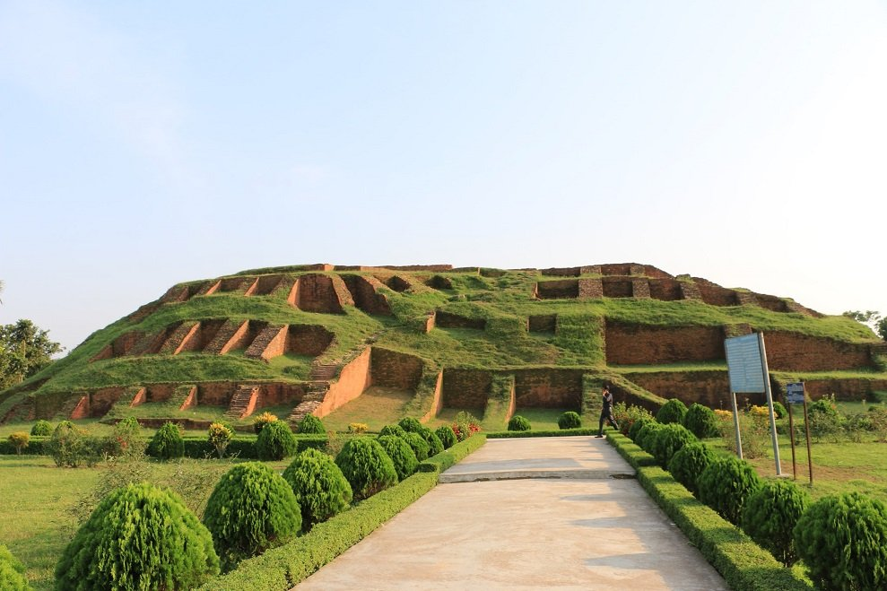
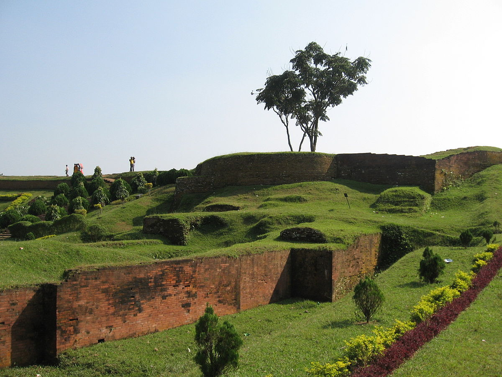
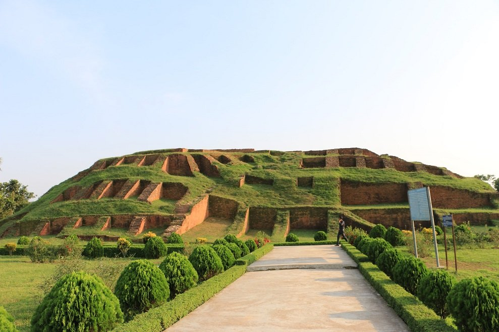
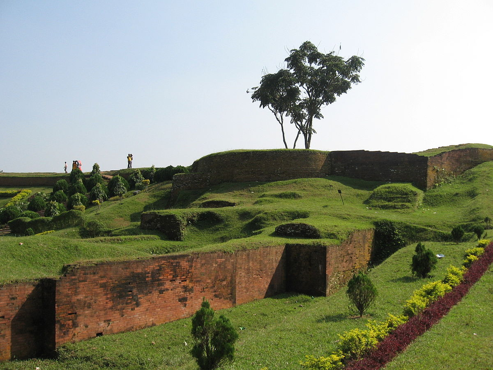
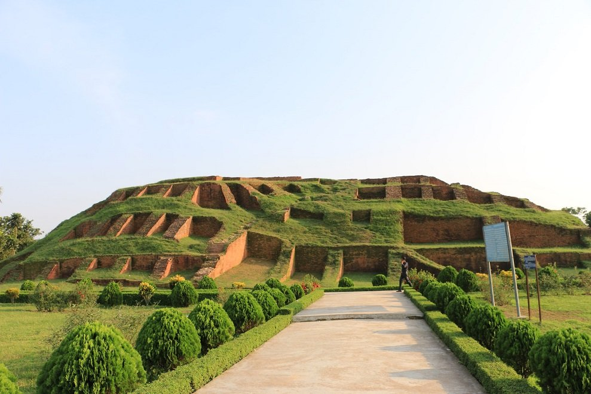
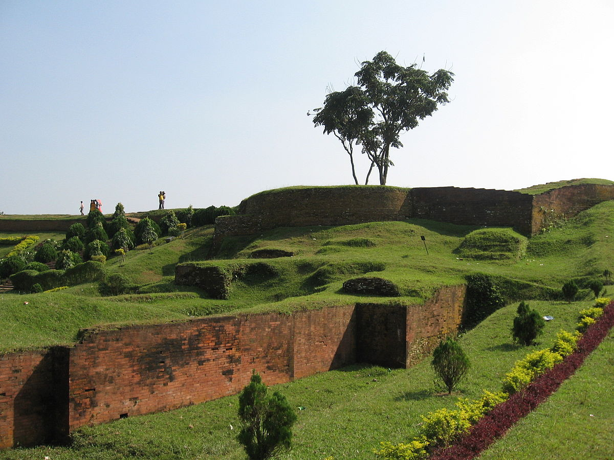
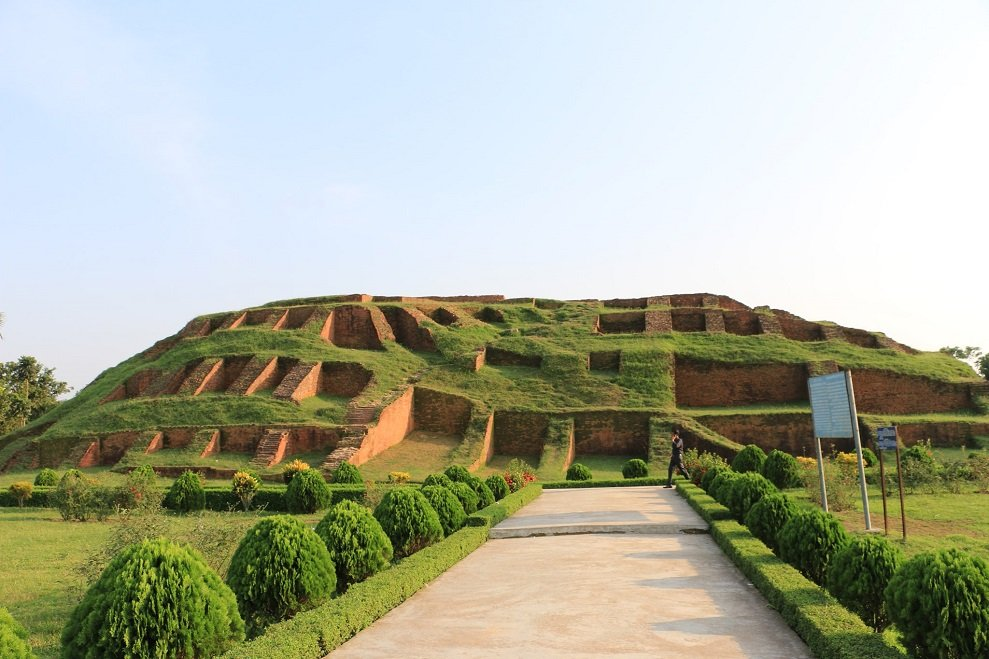
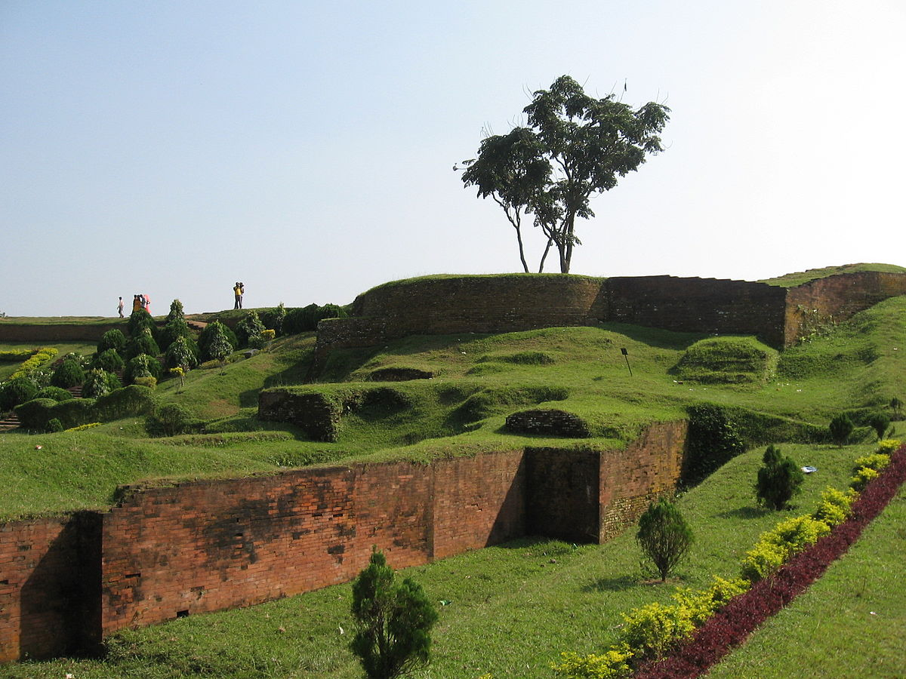

Mahasthangarh (Bengali: মহাস্থানগড় Môhasthangôṛ) is one of the earliest urban archaeological sites so far discovered in Bangladesh. The village Mahasthan in Shibganj thana of Bogra District contains the remains of an ancient city which was called Pundranagara or Paundravardhanapura in the territory of Pundravardhana.[1][2][3] A limestone slab bearing six lines in Prakrit in Brahmi script recording a land grant, discovered in 1931, dates Mahasthangarh to at least the 3rd century BC.[4][5] It was an important city under the Maurya Empire .The fortified area was in use until the 8th century AD.[2]
Mahasthan means a place that has excellent sanctity and garh means fort. Mahasthan was first mentioned in a Sanskrit text of the 13th century entitled Vallalcharita. It is also mentioned in an anonymous text Karatoya mahatmya, circumstantially placed in 12th–13th century. The same text also mentions two more names to mean the same place – Pundrakshetra, land of the Pundras, and Pundranagara, city of the Pundras. In 1685, an administrative decree mentioned the place as Mastangarh, a mixture of Sanskrit and Persian meaning fortified place of an auspicious personage. Subsequent discoveries have confirmed that the earlier name was Pundranagara or Paundravardhanapura, and that the present name of Mahasthangarh is of later origin.[6]
Mahasthangarh (Pundranagar), the ancient capital of Pundravardhana is located 11 km (6.8 mi) north of Bogra on the Bogra-Rangpur highway, with a feeder road (running along the eastern side of the ramparts of the citadel for 1.5 km) leading to Jahajghata and site museum.[7] Buses are available for Bogra from Dhaka and take 4½ hours for the journey via Bangabandhu Jamuna Bridge across the Jamuna River. Buses are available from Bogra to Mahasthangarh. Rickshaws are available for local movement. Hired transport is available at Dhaka/ Bogra. Accommodation is available at Bogra.[8] When travelling in a hired car, one can return to Dhaka the same day, unless somebody has a plan to visit Somapura Mahavihara at Paharpur in the district of Naogaon and other places, or engage in a detailed study. It is believed that the location for the city in the area was decided upon because it is one of the highest areas in Bangladesh. The land in the region is almost 36 metres (118 ft) above sea level, whereas Dhaka, the capital of Bangladesh, is around 6 metres (20 ft) above sea level. Another reason for choosing this place was the position and size of the Karatoya, which as recently as in the 13th century was three times wider than Ganges.[9] Mahasthangarh stands on the red soil of the Barind Tract which is slightly elevated within the largely alluvium area. The elevation of 15 to 25 metres above the surrounding areas makes it a relatively flood free physiographic unit.[10]
Systematic archaeological excavation of Mahasthangarh was first started in 1928–29 under the guidance of K.N.Dikshit of the Archaeological Survey of India. The areas around Jahajghata, Munir Ghon and Bairagir Bhita were explored. Excavation was resumed in 1934–36 at Bairagir Bhita and Govinda Bhita. Excavation was carried out in 1960s around the Mazhar, Parasuramer Prasad, Mankalir Dhap, Jiat Kunda and in a part of the northern rampart. In the next phase excavation was carried out sporadically in parts of the east and north ramparts but the final report is yet to be published. In the period 1992–98 excavation was conducted in the area lying between Bairagir Bhita and the gateway exposed in 1991 as a Bangla-Franco joint venture, which is now in its second phase with excavation around the mazhar in the western side of the citadel.[11]
There is a local legend that Shah Sultan Balkhi Mahisawar arrived at Pundravardhana in the garb of a fakir (mystic holy pedlar of Islamic philosophy) riding a fish. (Mahisawar is Persian word meaning a 'person who rides a fish'). He came from Balkh in Afghanistan with a retinue. The period of his arrival is variably put at 5th century AD, 11th century AD and 17th century AD. At that time there was a king named Parasuram with his seat and palace in Mahasthangarh. Mahisawar requested Parasuram for a piece of land to spread his prayer mat on which he could pray. The request was granted but the prayer mat started expanding as soon as it was laid on the ground. When the prayer mat reached the area around the palace bewildered Parasuram declared war. In the beginning the battle seemed to be favouring Parasuram. A scavenger Harapala informed Mahisawar that it was difficult to defeat the royal troops because of the pool called Jiat Kunda. A dead soldier bathed in the waters of Jiat Kunda came back to life. On knowing this Mahisawar asked a kite to drop a piece of beef in Jiat Kunda. When this was done, the pool lost its powers. The royal troops were on the verge of defeat. The commander of the royal troops, Chilhan, with a large number of his followers, went over to Mahisawar. Thereafter Parasuram and many members of the royal family committed suicide.[7] There are many variations of this anecdote, some of which are sold in Bengali booklets in and around Mahasthangarh/Pundravardhana.